User Experience
The RADA application features two distinct experiment tabs, one for LFA experiment and another for NAAT experiments. There are separated due to differences in the experimental design, especially regarding the addition of non-plate based hardware. Modifications can be made to widen the range of protocols that RADA can generate as needed.
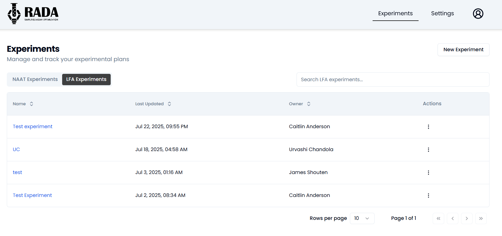
Figure 1. Home page of RADA web application. LFA and NAAT tabs contain experiments for their respective chemistries.
User Experience - LFA experiment
Generated LFA experiments can be found in the LFA tab. A new experiment can be generated by selecting "New Experiment" or by copying an existing experiment.
Input experimental details
Fill out the information required on the "New LFA Experiment" page (Figure 2).
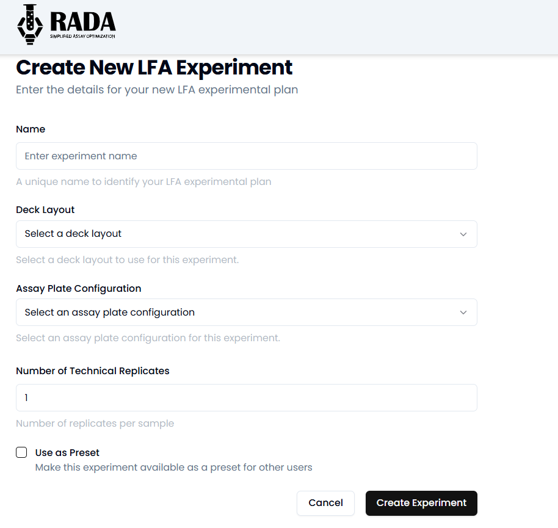
Figure 2. Create a new LFA experiment allows the user to input information required for a given experiment.
The items that need to be filled out include:
- Name of experiment
- Deck layout
- Assay plate configuration
- Number of technical replicates
- Option to make an experiment preset that will appear in the "New Experiment" drop down.
Both the Deck Layout and Assay Plate Configuration dropdown menus are populated with predefined setups created by RADA administrators. These configurations help standardize experiment setup and ensure compatibility with automated workflows.
Deck Layout refers to the layout of plates and tubes on the Hamilton deck. The deck layout must be consistent between the web application, the Hamilton Layout file, and the physical location of items on the Hamilton STAR.
Assay Plate Configuration refers to the assay holder (cassette, strip, etc) corresponding to the experiment being run.
Once the Deck Layout or Assay Plate Configuration have been selected, a preview of the selected configuration will be visible when hovering over the preview icon.
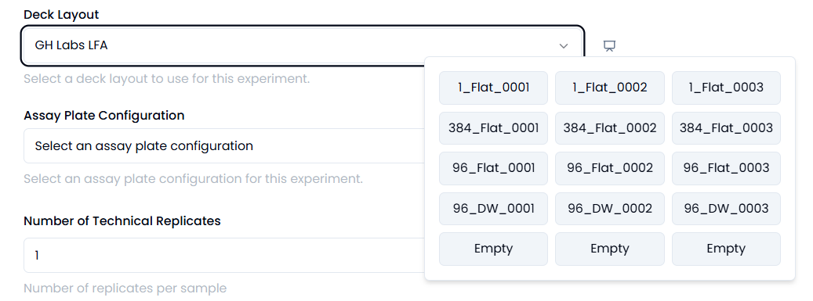
Figure 3. Hover over the icon to preview the selected deck layout.
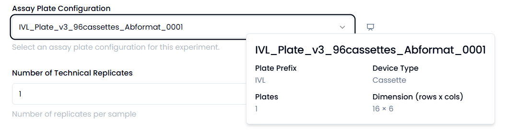
Figure 4. Hover over the icon to preview the selected assay plate configuration.
Once completed, select "Save and Continue".
The next page allows the user to Configure the LFA experiment steps. The form will pop up with one step, and more steps can be added by selecting the "Add step" button on the bottom right.
The information required for each step include:
- Step name.
- Liquid type to be pipetted. Select "Imaging" if the step is an imaging step.
- Volume to be pipetted. Note: Numbers can use decimals and are recommended to be between 1-1000uL for the current configuration.
- Time delay in seconds if a time delay is required between this and the subsequent step.
- Variable conditions for the experiment. The worklist generator will take the input variables and use a full factorial DoE to run all combinations of the input conditions. Keep an eye on the number of conditions and number of replicates to ensure that there are enough spots on the given deck layout to run the desired experiment.
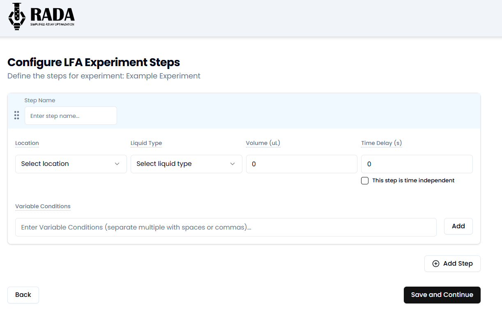
Figure 5. Screen to load LFA experiment steps.
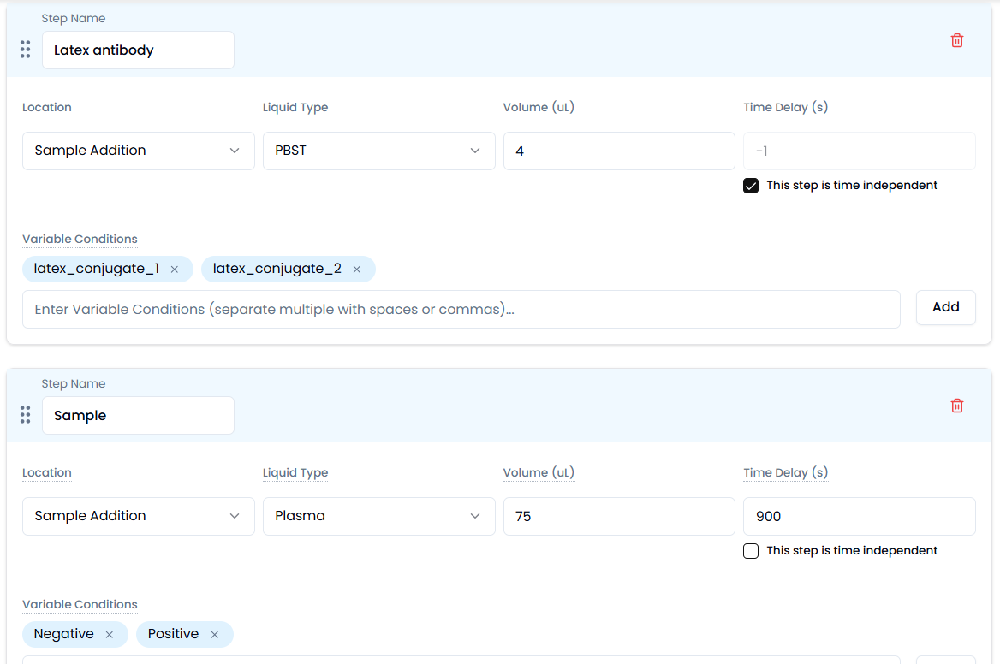
Figure 6. Screen with an example of loaded experiment steps.
The order of the steps can be adjusted by using the icon with six dots on the left of the Step Name.
Once the experiment details are finalized, select "Save and Continue"
Download worklist file(s)
Worklist file can be downloaded from the "Export Experiment" page. This file serves as the input for controlling the Hamilton Venus run.
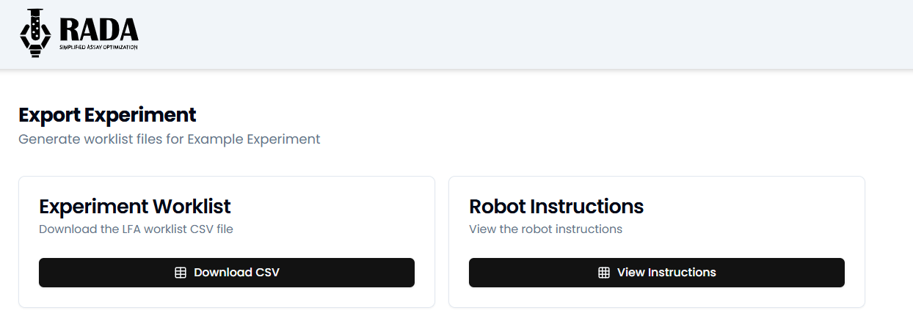
Figure 7. Export Experiment Files Page.
Note
The downloaded file is a CSV UTF-8. The DROP method does not recognize CSV UTF-8; the downloaded worklist must be saved as a plain .csv file.
View robot instructions to load deck
To enter the Worklist Viewer, select "View Instructions". This viewer contains all the information to correctly load reagents into plates and position the plates on the deck in their designated locations.
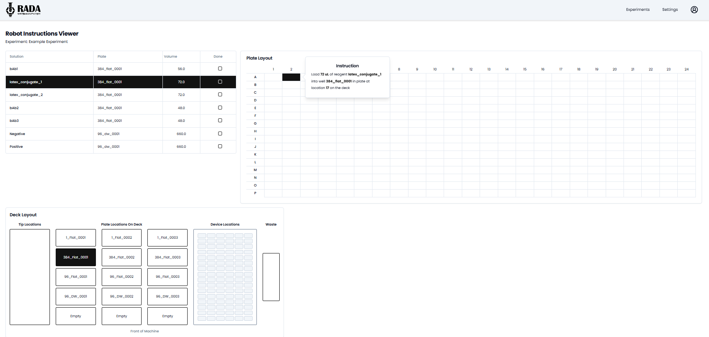
Figure 8. Page designed to support the set up of the reagents and plates onto the Hamilton Deck.
Once an experiment is created, it is saved in the application's built-in database. Experiments can be referenced at any time after creation and maybe modified or reloaded as needed. Additionally, completed experiments can be loaded with associated LogFiles and experimental data for further analysis or review.
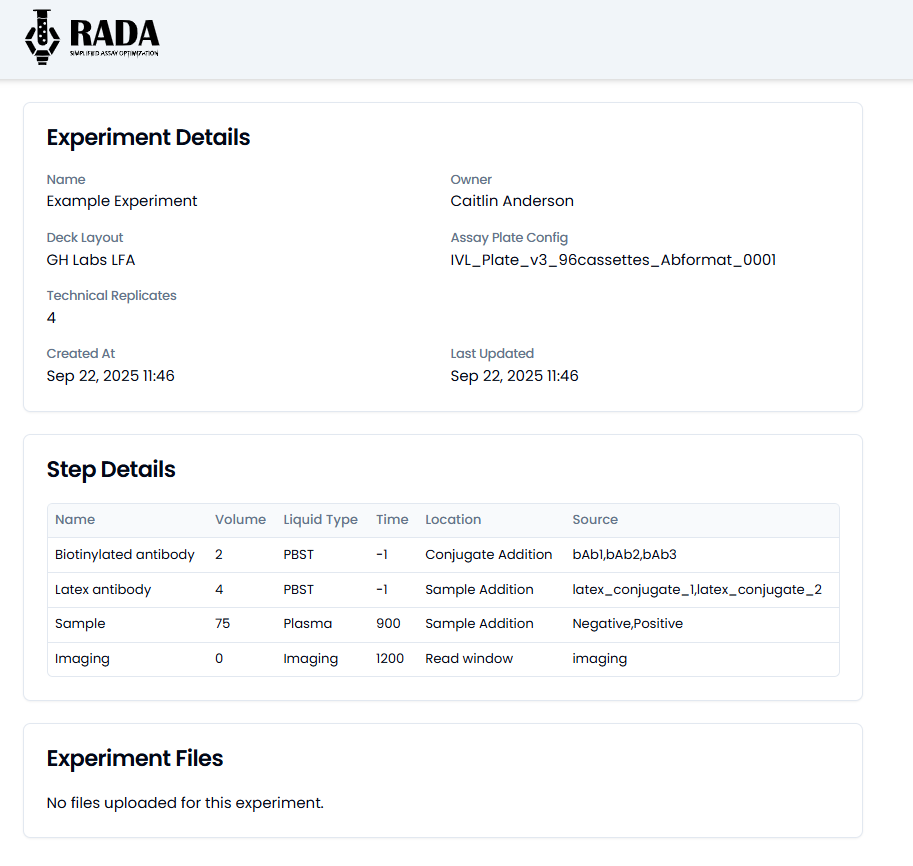
Figure 9. Experiment summary for example LFA experiment.
User Experience - NAAT experiment
All generated NAAT experiments can be viewed in the NAAT tab. To create a new experiment, select "New Experiment", or duplicate an existing one using the copy option. Presets for commonly used protocols are also available in this tab to streamline setup.
Input experimental details
Fill out the information required on the "New NAAT Experiment" page (Figure 10).
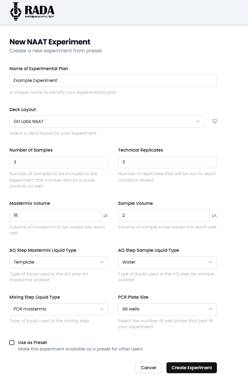
Figure 10. Create a new NAAT experiment allows the user to input information required for a given experiment.
The items that need to be filled out include:
- Name of experiment
- Deck layout
- Number of samples: this number should include the negative control
- Number of technical replicates
- Mastermix volume: the volume of mastermix only per reaction, not the total reaction volume
- Sample volume
- Liquid type for mastermix liquid
- Liquid type for sample liquid
- Liquid type for mixing step of mastermix (especially important if the mastermix contents are highly viscous or containing detergent)
- PCR plates size: dropdown with options for 96 and 384 wells
- Option to make an experiment preset that will appear in the "New Experiment" drop down.
The Deck Layout drop down menu displays configurations created by RADA. For more details on how these configurations are managed, refer to the Admin Capabilities section.
Once the Deck Layout has been selected, a preview of the selected configuration will be visible when hovering over the preview icon.
Once completed, select "Save and Continue".
Configure master mix components. On the next page, users can configure the steps of their NAAT experiment. Each master mix is loaded into a dedicated section, which can include as many components as needed.
The form initially displays one master mix by default. To add additional steps, simply click the "Add Master mix" button located at the bottom right of the page.
The information required for each step include:
- Master mix name
- Source name: the identity of the reagent (i.e. water, buffer, dNTPs, DNA pol, etc)
- Concentration unit: drop down menu with options for concentration value will apply to both the final and stock concentration inputs
- Final concentration desired in mastermix
- Stock concentration: starting concentration for reagent
- Liquid type to be pipetted: drop down menu that correlates with the respective liquid class
The order in which reagents are listed determines the sequence in which they will be added by the machine. To adjust the order, use the six-dot handle on the far right of each step to drag and rearrange items as needed. Similarly, master mix sections can be reordered to match your desired workflow or protocol sequence.
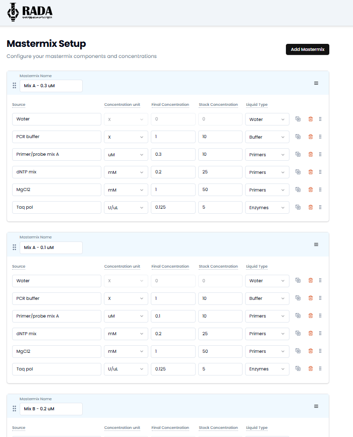
Figure 11. Screen to load NAAT experiment steps, with example information loaded.
To reduce repetitive setup, mastermixes can be copied. This can be done by selecting the three-bar menu located in the upper right corner of the mastermix header. This feature allows for quick duplication and easy modification of existing steps.

Figure 12. Dropdown to allow for addition of reagents to a mastermix, copy or delete the mastermix.
Once the experiment details are finalized, select "Save and Continue"
Download worklist file(s)
Worklist files can be downloaded from the Export Experiment page. These files are used as input for the Hamilton VENUS Run Control system.
The NAAT worklist generator produces two separate files: Master mix Worklist – handles the mixing and aliquoting of the master mix. Sample Worklist – manages the aliquoting of the samples.
This separation ensures precise execution and easier troubleshooting during automated runs.
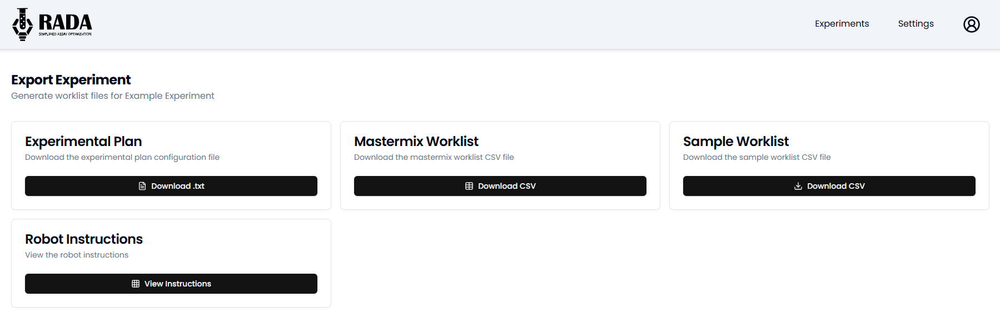
Figure 13. Export Experiment Files Page.
Note
The downloaded file is a CSV UTP-8 type. The DROP method does not recognize CSV UTF-8; the downloaded worklist must be saved as a plain .csv file.
View robot instructions to load deck
To enter the Worklist Viewer, select "View Instructions". This viewer contains all the information to correctly load reagents into plates and position the plates on the deck in their designated locations.
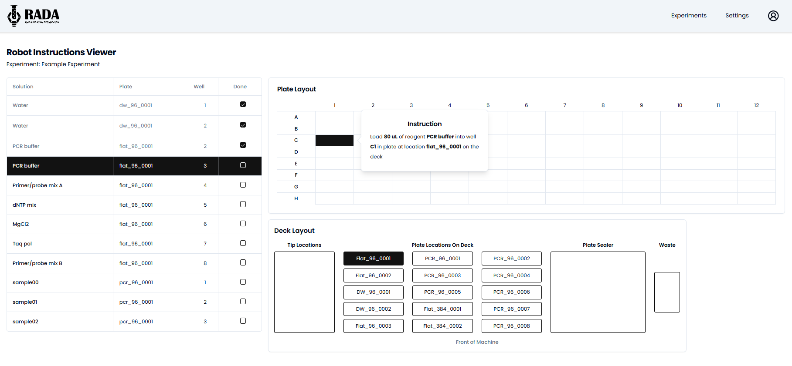
Figure 14. Page designed to support the set up of the reagents and plates onto the Hamilton Deck.
The worklist viewer has five sections:
- Reagent loading section – This section lists all reagents required for the experiment, including solution name (based on user input), plate name, well number, and a check box to indicate when a reagent has been loaded. Selecting a row will highlight the corresponding locations in both the Plate Layout and Deck Layout.
- Plate Layout – Displays the layout of a given plate, 96 or 384. When selected the corresponding well will be highlighted in black.
- Deck Layout – Shows the robot's deck configuration. When a reagent is selected, the associated plate is highlighted in black, mirroring the Plate Layout behavior.
- Instructions – When a reagent row is selected, this panel provides detailed loading instructions, including: Solution name, volume to be pipetted, well and plate ID. This helps users accurately load reagents with the correct volume and location.